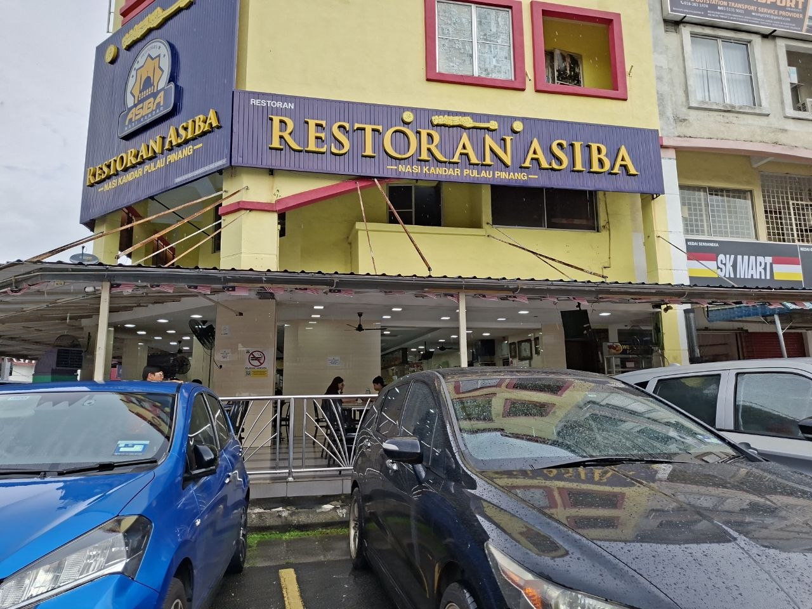

Restaurant Asiba
Mamak cuisine
Restaurant Asiba is a lively mamak spot serving Malaysian comfort food around the clock. Locals love its crispy, fluffy roti canai, rich curries and frothy teh tarik. The portions are generous, the prices are friendly, and the relaxed atmosphere makes it perfect for late-night suppers or casual catch-ups with friends and family.
Address: Jalan Anggerik Vanilla U 31/U, Kota Kemuning, 40460 Shah Alam, Selangor
Signature dishes
- Roti Canai - RM 2.50
- Nasi Lemak Ayam - RM 9.00
- Mee Goreng Mamak - RM 8.50
- Teh Tarik - RM 2.50
Average price: RM10 - RM20 per person
Halal: Yes
Vegetarian options: Yes
Best for: Family
Reservation deposit: RM10
Reserve a table